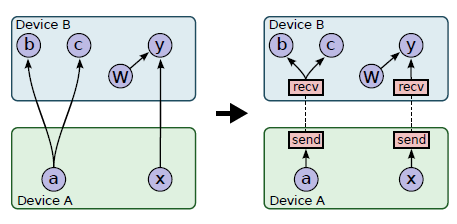
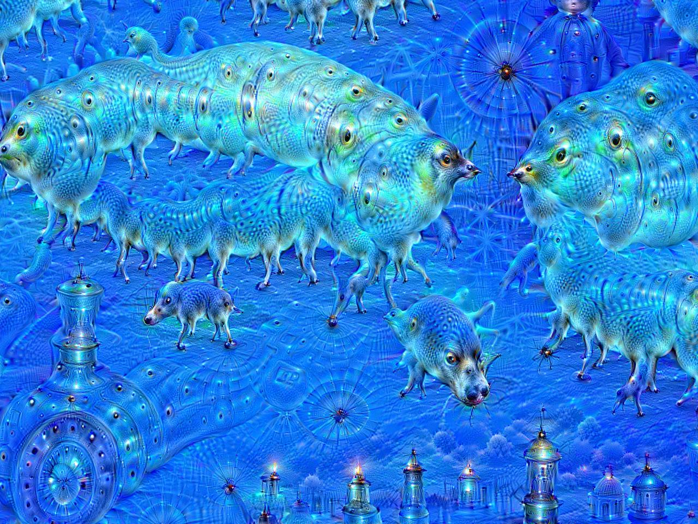
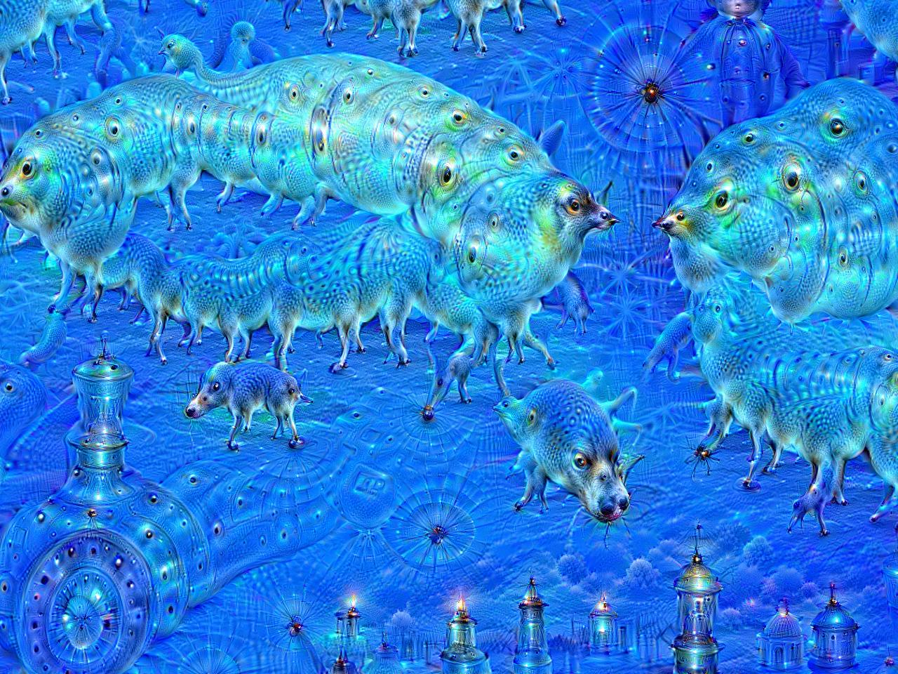

Introduction
TensorFlow is a Google-developed machine learning library released as open source on November 9th, 2015. It shares characteristics with a number of other machine learning libraries, but is geared primarily towards operating at large scale on distributed/heterogeneous systems.At the time of its release, TensorFlow was similar to a number of other (non-distributed) ML libraries, having features like Theano's symbolic differentiation (i.e. graph-based computations) and Caffe's C++ core with Python frontend. However, it also was an evolution of Google's DistBelief system, which had the distributed computing capibility but not the graph-based dataflow. TensorFlow's distributed computing model was also likened to existing distributed systems, such as Dryad, CIEL, and Spark.
Google's decision to open-source TensorFlow was thus apparently less a matter of innovating a new system and more a matter of standardizing and consolidating machine learning approaches into a massively scalable framework, with the stated goal of "accelerat[ing] research on machine learning" [2].
Programming Model
Essentially, TensorFlow separates itself into four major layers of operation; from highest level to lowest:- Client: The "user" program, which sets up a computation graph that is then operated on by the rest of the layers; the execution of this graph is started via a Session interface.
- Distributed Master: Divides the computation graph into subgraphs and graph pieces to be run by worker services, and distributes these subgraphs/pieces to worker services accordingly.
- Worker Services: Executes assigned graph computations via kernels (i.e. scheduling kernels to do computations based on the CPU/GPU/etc. hardware available).
- Kernels: Do lowest-level/individual graph computations.
Overall architecture of TensorFlow system. In a non-distributed system, the Master and Worker nodes are replaced by a single Session object specialized for operating only locally.
Example computation graph. b and W are variables; x is an input placeholder; MatMul, Add, and ReLU are operations; and C is a computed cost result.
With distributed systems, the issue is then deciding how to divide the computation of the graph across worker services and hardware nodes. TensorFlow handles this by first running a placement algorithm, which divides computation graph nodes between hardware devices (i.e. kernels) based on what hardware devices can perform which computation operations the fastest, and then distributing subgraphs of the main graph to the worker services based on the placement map. "Send" and "Receive" nodes are then set up between devices to connect computation nodes that would be connected in the original computation graph, i.e. so different parts of the graph can synchronize correctly across the distributed system.

Enabling cross-device communication by inserting Send and Receive nodes.
Implementation Status
TensorFlow's main API is in Python (with a C++ core); C++, Java, and Go APIs are also listed on the TensorFlow site, but with the stipulation that they may not be completely stable. As it is open source, the code for TensorFlow is available on GitHub under an Apache 2.0 license; users, whether they be Google internal or in the external community, are encouraged to develop frontends for the API as needed.Installation packages come in CPU-only and NVIDIA GPU-capable (based on CUDA and cuDNN) variants. The "Deploy" section of TensorFlow's website also provides instructions for running on Hadoop (HDFS) and distributing TensorFlow across a server cluster.
Applications
All of the applications listed on the official TensorFlow site are (perhaps expectedly) Google-made; these include:- RankBrain: A machine learning-based replacement for Google's search algorithm, that learns from user searches to generate more relevant search suggestions and results.
- Inception: A convolutional neural net model for doing image classification that set "the new state of the art for classification and detection in the ImageNet Large-Scale Visual Recognition Challenge 2014 (ILSVRC 2014)".
- On-Device Computer Vision for OCR: For use in the Google Translate mobile app, i.e. doing image recognition on photos of natural language text for purposes of reading that text into the app to be translated.
.jpg) 

DeepDream, before and after: Apparently the result of applying the Inception CNN in reverse, to produce images instead of classify them.